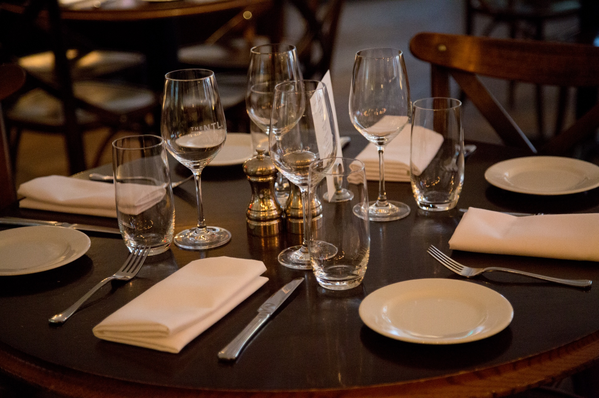
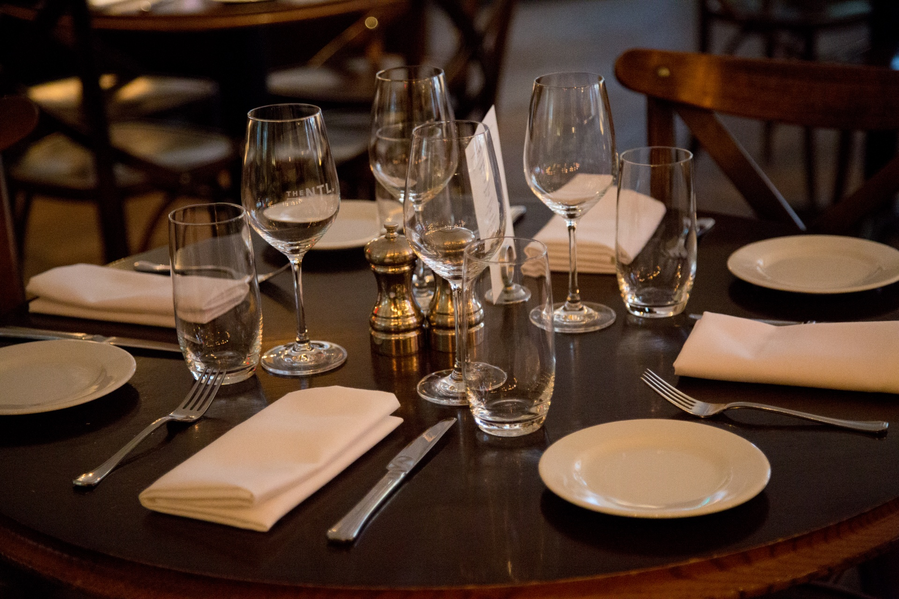

O nosso restaurante
O melhor restaurante da região com comida totalmente caseira feita no dia e com um sabor sensacional.
Sinta-se completamente à vontade no nosso espaço acolhedor com estilo tradicional com um toque de tecnologia que promete a comida pronta em menos de 10 minutos.
As nossas instalações
 

Take-Away
As encomendas de comida take-away podem ser efetuadas no restaurante, por telefone (244244244) ou através do site clicando aqui.
Reservas
Por vezes o nosso modesto estabelecimento atinge a capacidade máxima de 100 lugares sentados principalmente em ocasiões especiais.
Para efetuar uma reserva pode fazê-lo no restaurante, por telefone (244244244) ou através do site clicando aqui.
Deve fazer a reserva antes das horas das refeições principais para que possamos garantir o seu lugar.